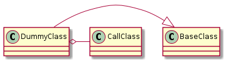
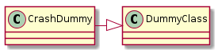
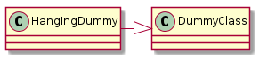

<!DOCTYPE html>


<html xmlns="http://www.w3.org/1999/xhtml">
  <head>
    <meta http-equiv="Content-Type" content="text/html; charset=utf-8" />
    
    <title>The Dummy &mdash; The Tuna 2014.07.10 documentation</title>
    
    <link rel="stylesheet" href="../../_static/basic.css" type="text/css" />
    <link rel="stylesheet" href="../../_static/pygments.css" type="text/css" />
    <link rel="stylesheet" href="../../_static/bootswatch-3.3.4/spacelab/bootstrap.min.css" type="text/css" />
    <link rel="stylesheet" href="../../_static/bootstrap-sphinx.css" type="text/css" />
    
    <script type="text/javascript">
      var DOCUMENTATION_OPTIONS = {
        URL_ROOT:    '../../',
        VERSION:     '2014.07.10',
        COLLAPSE_INDEX: false,
        FILE_SUFFIX: '.html',
        HAS_SOURCE:  true
      };
    </script>
    <script type="text/javascript" src="../../_static/jquery.js"></script>
    <script type="text/javascript" src="../../_static/underscore.js"></script>
    <script type="text/javascript" src="../../_static/doctools.js"></script>
    <script type="text/javascript" src="../../_static/processing.js"></script>
    <script type="text/javascript" src="../../_static/js/jquery-1.11.0.min.js"></script>
    <script type="text/javascript" src="../../_static/js/jquery-fix.js"></script>
    <script type="text/javascript" src="../../_static/bootstrap-3.3.4/js/bootstrap.min.js"></script>
    <script type="text/javascript" src="../../_static/bootstrap-sphinx.js"></script>
    <link rel="top" title="The Tuna 2014.07.10 documentation" href="../../index.html" />
    <link rel="up" title="Dummy Components" href="index.html" />
<meta charset='utf-8'>
<meta http-equiv='X-UA-Compatible' content='IE=edge,chrome=1'>
<meta name='viewport' content='width=device-width, initial-scale=1.0, maximum-scale=1'>
<meta name="apple-mobile-web-app-capable" content="yes">

  </head>
  <body role="document">

  <div id="navbar" class="navbar navbar-default navbar-fixed-top">
    <div class="container">
      <div class="navbar-header">
        <!-- .btn-navbar is used as the toggle for collapsed navbar content -->
        <button type="button" class="navbar-toggle" data-toggle="collapse" data-target=".nav-collapse">
          <span class="icon-bar"></span>
          <span class="icon-bar"></span>
          <span class="icon-bar"></span>
        </button>
        <a class="navbar-brand" href="../../index.html">
          The Tuna</a>
        <span class="navbar-text navbar-version pull-left"><b>2014.07.10</b></span>
      </div>

        <div class="collapse navbar-collapse nav-collapse">
          <ul class="nav navbar-nav">
            
            
              <li class="dropdown globaltoc-container">
  <a role="button"
     id="dLabelGlobalToc"
     data-toggle="dropdown"
     data-target="#"
     href="../../index.html">Site <b class="caret"></b></a>
  <ul class="dropdown-menu globaltoc"
      role="menu"
      aria-labelledby="dLabelGlobalToc"><ul>
<li class="toctree-l1"><a class="reference internal" href="../../documentation/developer/index.html">Developer Documentation</a></li>
<li class="toctree-l1"><a class="reference internal" href="../../documentation/user/index.html">User Documentation</a></li>
</ul>
<ul>
<li class="toctree-l1"><a class="reference internal" href="../../log_setter.html">Log Setter</a></li>
<li class="toctree-l1"><a class="reference internal" href="../../main.html">The Main Entry Point</a></li>
</ul>
<ul class="current">
<li class="toctree-l1"><a class="reference internal" href="../../clients/index.html">Client Connections</a></li>
<li class="toctree-l1"><a class="reference internal" href="../../commands/index.html">Commands</a></li>
<li class="toctree-l1"><a class="reference internal" href="../../components/index.html">The Components</a></li>
<li class="toctree-l1"><a class="reference internal" href="../../explorations/index.html">Explorations</a></li>
<li class="toctree-l1"><a class="reference internal" href="../../hosts/index.html">Hosts</a></li>
<li class="toctree-l1"><a class="reference internal" href="../../infrastructure/index.html">The Infrastructure</a></li>
<li class="toctree-l1"><a class="reference internal" href="../../optimizers/index.html">Optimizers</a></li>
<li class="toctree-l1 current"><a class="reference internal" href="../index.html">The Parts</a></li>
<li class="toctree-l1"><a class="reference internal" href="../../plugins/index.html">The Tuna-Plugins</a></li>
<li class="toctree-l1"><a class="reference internal" href="../../qualities/index.html">Quality Modules</a></li>
<li class="toctree-l1"><a class="reference internal" href="../../tweaks/index.html">Tweaks</a></li>
</ul>
</ul>
</li>
              
                <li class="dropdown">
  <a role="button"
     id="dLabelLocalToc"
     data-toggle="dropdown"
     data-target="#"
     href="#">Page <b class="caret"></b></a>
  <ul class="dropdown-menu localtoc"
      role="menu"
      aria-labelledby="dLabelLocalToc"><ul>
<li><a class="reference internal" href="#">The Dummy</a><ul>
<li><a class="reference internal" href="#dummy-constants">Dummy Constants</a></li>
<li><a class="reference internal" href="#the-dummy-class">The Dummy Class</a></li>
<li><a class="reference internal" href="#a-crash-dummy">A Crash Dummy</a></li>
<li><a class="reference internal" href="#the-hanging-dummy">The Hanging Dummy</a></li>
<li><a class="reference internal" href="#an-example">An Example</a></li>
</ul>
</li>
</ul>
</ul>
</li>
              
            
            
              
                
              
            
            
            
            
              <li class="hidden-sm">
<div id="sourcelink">
  <a href="../../_sources/parts/dummy/dummy.txt"
     rel="nofollow">Source</a>
</div></li>
            
          </ul>

          
            
<form class="navbar-form navbar-right" action="../../search.html" method="get">
 <div class="form-group">
  <input type="text" name="q" class="form-control" placeholder="Search" />
 </div>
  <input type="hidden" name="check_keywords" value="yes" />
  <input type="hidden" name="area" value="default" />
</form>
          
        </div>
    </div>
  </div>

<div class="container">
  <div class="row">
    <div class="col-md-12 content">
      
  <div class="section" id="the-dummy">
<h1>The Dummy<a class="headerlink" href="#the-dummy" title="Permalink to this headline">¶</a></h1>
<p>This module holds classes to help test the running of the infrastructure.</p>
<div class="section" id="dummy-constants">
<h2>Dummy Constants<a class="headerlink" href="#dummy-constants" title="Permalink to this headline">¶</a></h2>
<div class="highlight-default"><div class="highlight"><pre><span></span><span class="k">class</span> <span class="nc">DummyConstants</span><span class="p">(</span><span class="nb">object</span><span class="p">):</span>
    <span class="sd">&quot;&quot;&quot;</span>
<span class="sd">    Constants for using the dummy</span>
<span class="sd">    &quot;&quot;&quot;</span>
    <span class="n">__slots__</span> <span class="o">=</span> <span class="p">()</span>
    <span class="n">debug_level</span> <span class="o">=</span> <span class="s1">&#39;debug&#39;</span>
</pre></div>
</div>
</div>
<div class="section" id="the-dummy-class">
<h2>The Dummy Class<a class="headerlink" href="#the-dummy-class" title="Permalink to this headline">¶</a></h2>
<p id="dummy-class">The Dummy module holds dummy classes that do nothing. They is primarily used to test implementations of infrastructure components.</p>
<p class="plantuml">

</p>
<table border="1" class="longtable docutils">
<colgroup>
<col width="10%" />
<col width="90%" />
</colgroup>
<tbody valign="top">
<tr class="row-odd"><td><code class="xref py py-obj docutils literal"><span class="pre">DummyClass</span></code></td>
<td></td>
</tr>
<tr class="row-even"><td><code class="xref py py-obj docutils literal"><span class="pre">DummyClass.__call__</span></code></td>
<td></td>
</tr>
<tr class="row-odd"><td><code class="xref py py-obj docutils literal"><span class="pre">DummyClass.__str__</span></code></td>
<td></td>
</tr>
<tr class="row-even"><td><code class="xref py py-obj docutils literal"><span class="pre">DummyClass.__getattr__</span></code></td>
<td></td>
</tr>
</tbody>
</table>
<p>The Dummy Class logs (at the <cite>info</cite>) level when it is created and when it is called.</p>
</div>
<div class="section" id="a-crash-dummy">
<span id="crash-dummy"></span><h2>A Crash Dummy<a class="headerlink" href="#a-crash-dummy" title="Permalink to this headline">¶</a></h2>
<p>This is a Dummy that raises an error when called.</p>
<p class="plantuml">

</p>
<table border="1" class="longtable docutils">
<colgroup>
<col width="10%" />
<col width="90%" />
</colgroup>
<tbody valign="top">
<tr class="row-odd"><td><code class="xref py py-obj docutils literal"><span class="pre">CrashDummy</span></code></td>
<td></td>
</tr>
<tr class="row-even"><td><code class="xref py py-obj docutils literal"><span class="pre">CrashDummy.check_rep</span></code></td>
<td></td>
</tr>
<tr class="row-odd"><td><code class="xref py py-obj docutils literal"><span class="pre">CrashDummy.close</span></code></td>
<td></td>
</tr>
<tr class="row-even"><td><code class="xref py py-obj docutils literal"><span class="pre">CrashDummy.__getattr__</span></code></td>
<td></td>
</tr>
</tbody>
</table>
<div class="admonition note">
<p class="first admonition-title">Note</p>
<p class="last">check_rep and close don&#8217;t need to be implemented to crash, but the Composite is checking if it has the attributes before calling them so they have to be implemented to crash them</p>
</div>
</div>
<div class="section" id="the-hanging-dummy">
<span id="hanging-dummy"></span><h2>The Hanging Dummy<a class="headerlink" href="#the-hanging-dummy" title="Permalink to this headline">¶</a></h2>
<p>This is a Dummy that will block forever.</p>
<p class="plantuml">

</p>
<table border="1" class="longtable docutils">
<colgroup>
<col width="10%" />
<col width="90%" />
</colgroup>
<tbody valign="top">
<tr class="row-odd"><td><code class="xref py py-obj docutils literal"><span class="pre">HangingDummy</span></code></td>
<td></td>
</tr>
<tr class="row-even"><td><code class="xref py py-obj docutils literal"><span class="pre">HangingDummy.__call__</span></code></td>
<td></td>
</tr>
</tbody>
</table>
</div>
<div class="section" id="an-example">
<h2>An Example<a class="headerlink" href="#an-example" title="Permalink to this headline">¶</a></h2>
<p>As an example we can create an operator and make some fake calls to it (I do not think the logging will get captured by Pweave, though).</p>
<div class="highlight-default"><div class="highlight"><pre><span></span><span class="k">if</span> <span class="n">output_documentation</span><span class="p">:</span>
    <span class="k">class</span> <span class="nc">FakeLogger</span><span class="p">(</span><span class="nb">object</span><span class="p">):</span>
        <span class="k">def</span> <span class="nf">__call__</span><span class="p">(</span><span class="bp">self</span><span class="p">,</span> <span class="n">output</span><span class="p">):</span>
            <span class="nb">print</span> <span class="n">output</span>

    <span class="k">class</span> <span class="nc">KingKong</span><span class="p">(</span><span class="n">DummyClass</span><span class="p">):</span>
        <span class="k">def</span> <span class="nf">__init__</span><span class="p">(</span><span class="bp">self</span><span class="p">,</span> <span class="o">*</span><span class="n">args</span><span class="p">,</span> <span class="o">**</span><span class="n">kwargs</span><span class="p">):</span>
            <span class="nb">super</span><span class="p">(</span><span class="n">KingKong</span><span class="p">,</span> <span class="bp">self</span><span class="p">)</span><span class="o">.</span><span class="n">__init__</span><span class="p">(</span><span class="o">*</span><span class="n">args</span><span class="p">,</span> <span class="o">**</span><span class="n">kwargs</span><span class="p">)</span>
            <span class="bp">self</span><span class="o">.</span><span class="n">_log</span> <span class="o">=</span> <span class="n">FakeLogger</span><span class="p">()</span>
            <span class="k">return</span>


    <span class="n">kongs</span> <span class="o">=</span> <span class="p">(</span><span class="n">KingKong</span><span class="p">(</span><span class="n">index</span><span class="p">,</span> <span class="n">name</span><span class="p">)</span> <span class="k">for</span> <span class="n">index</span><span class="p">,</span><span class="n">name</span> <span class="ow">in</span> <span class="nb">enumerate</span><span class="p">(</span><span class="s1">&#39;Kong MightyJoe&#39;</span><span class="o">.</span><span class="n">split</span><span class="p">()))</span>
    <span class="k">for</span> <span class="n">kong</span> <span class="ow">in</span> <span class="n">kongs</span><span class="p">:</span>
        <span class="n">kong</span><span class="o">.</span><span class="n">rampage</span><span class="p">()</span>
        <span class="n">kong</span><span class="p">(</span><span class="s1">&#39;fay wray&#39;</span><span class="p">)</span>
</pre></div>
</div>
<div class="highlight-default"><div class="highlight"><pre><span></span>&#39;rampage&#39; attribute called on 0
0 Called
Args: (&#39;fay wray&#39;,)
Kwargs: {}
&#39;rampage&#39; attribute called on 1
1 Called
Args: (&#39;fay wray&#39;,)
Kwargs: {}
</pre></div>
</div>
<p>I had to add a fake logger because pweave does not capture logging output. If you run this module:</p>
<div class="highlight-default"><div class="highlight"><pre><span></span><span class="n">python</span> <span class="n">dummy</span><span class="o">.</span><span class="n">py</span>
</pre></div>
</div>
<p>You should see what is being sent to the logger in full color (without the extra ANSI codes).</p>
</div>
</div>


    </div>
      
  </div>
</div>
<footer class="footer">
  <div class="container">
    <p class="pull-right">
      <a href="#">Back to top</a>
      
    </p>
    <p>
        &copy; Copyright 2014, russell nakamura.<br/>
      Created using <a href="http://sphinx-doc.org/">Sphinx</a> 1.4.<br/>
    </p>
  </div>
</footer>
  </body>
</html>